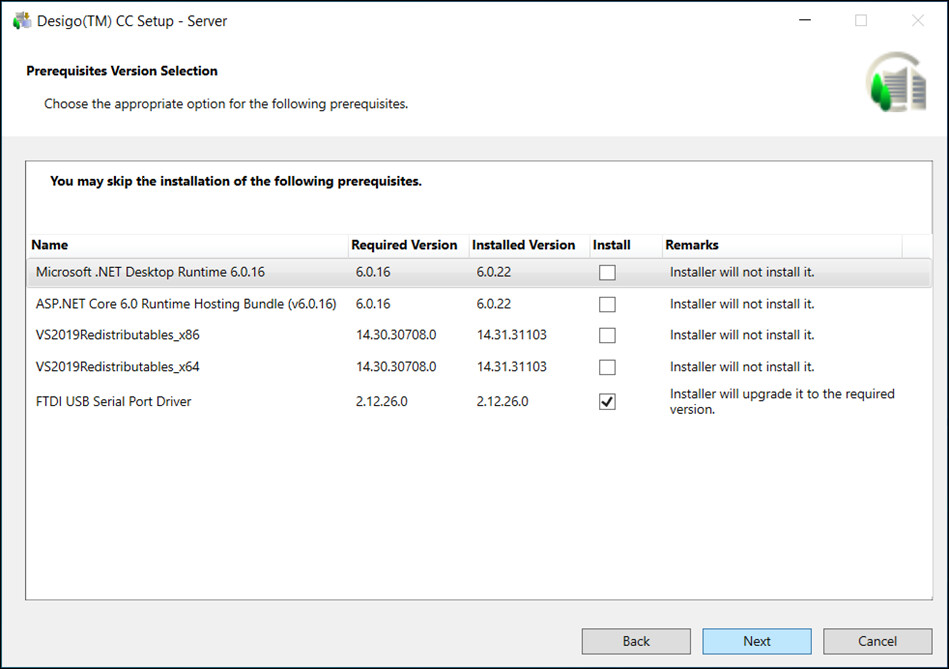

Verify the Prerequisite Version Selection Option
- The Prerequisites Version Selection dialog box displays listing the required versions of the installed prerequisites and the actions the Installer will take during the upgrade.
- During the upgrade, the already installed mandatory prerequisite WinCC OA is upgraded to WinCC OA 3.19 by uninstalling the installed version and installing the required version.
- During upgrade, if a mandatory prerequisite fails to install, a message displays and the Installer aborts the installation process. For more information, see Review the Installation Prerequisites in Verify the GMS Folder.
- If a non-mandatory prerequisite fails to install, the installation process continues and notifies you about the failure at the end.
You can also install a non-mandatory prerequisite manually if it failed during the upgrade or installation. For more information, see Install or Upgrade a Prerequisite using the Distribution Media in Additional Installer Procedures. - If you have already installed V4.2 with Microsoft SQL Server 2014 - Express Edition, you do not need to uninstall it. During upgrade Installer upgrades it to the latest version, Microsoft SQL Server 2022 - Express Edition.
However, in V4.2 if you have skipped the Microsoft SQL Server 2014 - Express Edition installation during installation or used your own SQL Server, still in V4.2 required SQL Client components prerequisites are installed. Now, during upgrade, Installer upgrades required SQL Client components prerequisites. - You can also skip Microsoft SQL Server 2022 - Express Edition. Note that the required SQL Client components prerequisites are still upgraded/installed.

- Click Next.